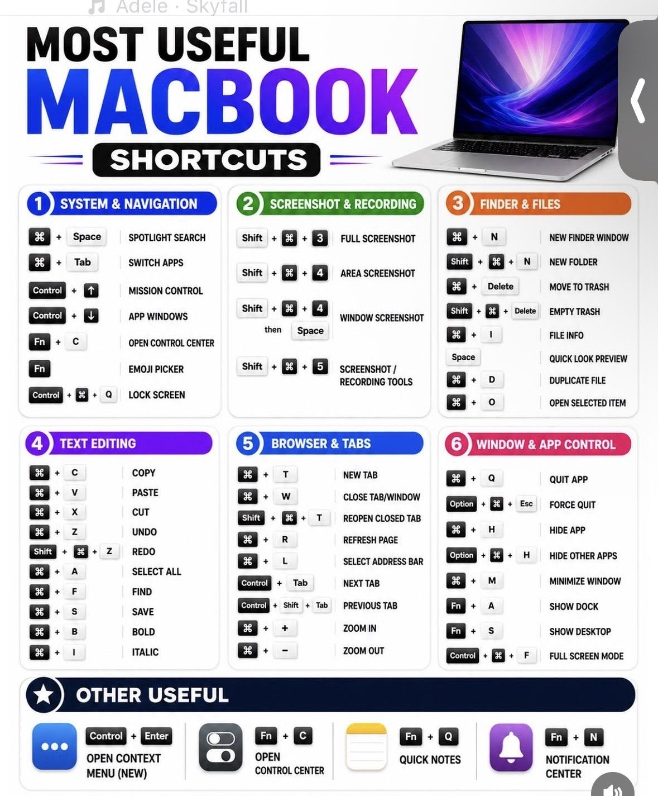

테크 · 사진 · 2026-11-24
맥북 필수 단축키 모음
시스템·스크린샷·파인더·텍스트 편집·브라우저·창 제어 등 6개 분야와 기타 유용한 기능으로 나눠 맥북 단축키를 정리한 인포그래픽이다.

- 시스템 탐색에서는 ⌘+Space로 Spotlight 검색, ⌘+Tab으로 앱 전환, Control+⌘+Q로 화면 잠금을 할 수 있다.
- Shift+⌘+3은 전체 화면, Shift+⌘+4는 영역 캡처이며, Shift+⌘+4 후 Space를 누르면 창 단위로 캡처하고 Shift+⌘+5는 캡처·녹화 도구를 연다.
- 파인더에서는 ⌘+N으로 새 창, Shift+⌘+N으로 새 폴더, ⌘+Delete로 휴지통 이동, Space로 빠른 미리보기를 한다.
- 텍스트 편집은 ⌘+C·V·X로 복사·붙여넣기·잘라내기, ⌘+Z로 실행 취소, Shift+⌘+Z로 다시 실행한다.
- 브라우저에서는 ⌘+T로 새 탭, ⌘+W로 탭 닫기, Shift+⌘+T로 닫은 탭 다시 열기, ⌘+L로 주소창 선택을 한다.
- 앱 제어는 ⌘+Q로 앱 종료, Option+⌘+Esc로 강제 종료, ⌘+M으로 창 최소화, Control+⌘+F로 전체 화면 모드를 쓴다.
- 기타로 Fn+C는 제어 센터, Fn+Q는 빠른 메모, Fn+N은 알림 센터를 열고 Control+Enter는 컨텍스트 메뉴를 연다.